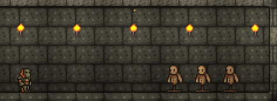

테라리아는 2D의 단면화된 시야를 배경으로 캐릭터가 움직이는 3인칭 게임입니다. 아이템이 매우 다양하고 환상적인 요소가 담겨져 있는 RPG 게임형태를 띄고 있습니다. 유한한 맵에서 다양한 건축 블록과 아이템으로 나만의 세계를 꾸미고, 다양한 NPC들을 만나볼 수 있으며, 강력한 보스들을 처치할 수 있습니다. 또한, 특정 조건을 만족하면 일어나는 특별한 이벤트도 찾아볼 수 있습니다.
테라리아는 하나의 캐릭터로 여러 개의 세계를 탐험할 수 있다. 다양한 캐릭터를 만들어서 역할을 분담하거나 아이템 습득용, 건축용 등으로 따로따로 관리할 수가 있다.
캐릭터를 생성할 때 헤어, 눈, 피부, 옷, 성별, 이름을 커스터마이징 가능하며, 무작위 설정도 할 수 있다. 헤어와 옷은 차후 본 게임에서 변경 가능하지만 눈과 피부는 변경할 수 있는 방법이 없으므로 신중하게 지정해야한다. 반면, 성전환 포션을 통해 성별은 언제든지 변경이 가능하다.
테라리아의 세계는 매우 다양한 지형으로 구성된다. 따로 특정한 구역이 정해져 있지 않으며 그 지형을 상징하는 특별한 블록의 분포량으로 결정된다. 각 지형은 그 고유의 배경과 음악을 가지므로 이를 통해 쉽게 인지할 수 있다. 위 사진은 테라리아에서 생성되는 세계의 모든 지형을 층, 지형별로 구분해놓은 사진이다.
집을 지을 때는 2D라는 특징 덕분에 간단한 편입니다. 적절히 사각형으로 지으면 되지만 자신만의 독특한 집을 짓는 것도 게임 속 재미중 하나입니다. 집의 지형지물이 되는 블록과 2D의 배경이 되는 벽을 설치하는 식으로 집을 짓게 되는데, 블록과 벽타일의 종류가 수백 가지나 되며, 추가로 페인트나 특수 블록으로 더 다양한 색감과 질감을 낼 수 있습니다.


테라리아는 전투의 비중이 높습니다. 낮에는 슬라임을 잡아 젤을 얻어 횃불을 만들고, 밤에는 좀비 떼와 하늘을 날아다니는 악마의 눈들에게서 몸을 지켜야 합니다. 특정 조건을 만족하면 고블린 부대가 레이드를 오며, 지하 최하층으로 가게 되면 있는 지옥에서는 악마들과 싸우게 됩니다. 이외에도 여러 보스 몬스터가 등장하며, 이들을 잡아야만 얻을 수 있는 아이템이 있어 반드시 잡아야 합니다. 장비에 따라 차이가 많이 나므로 더 좋은 무기를 얻는 것이 중요합니다.
